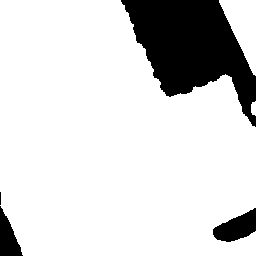

Single-view BEV floor completion.
FlatLands turns partial egocentric floor evidence into a benchmark for completing metric traversability maps. Each observation preserves what the camera saw and asks models to infer only the valid, unobserved region.
Observation Packet


Ambiguity Is The Point
A sparse partial map may have several valid completions. FlatLands evaluates stochastic hypotheses and highlights where layout uncertainty concentrates.


RGB-To-BEV Pipeline
The paper instantiates the full monocular pipeline: RGB input, estimated depth, floor segmentation, BEV projection, and sampled floormap completions.

Download
hf download Rudra1ssb/FlatLands FlatLands_final_dataset.zip --repo-type dataset
unzip FlatLands_final_dataset.zip -d FlatLandsData Use
FlatLands is a derived research dataset. Users must comply with the upstream source dataset terms listed in LICENSES.md.
Copyright & Data Rights
FlatLands release materials are copyright (c) 2026 Subhransu S. Bhattacharjee, Dylan Campbell, and Rahul Shome.
FlatLands is a derived research dataset. The derived BEV maps, masks, metadata, statistics, provenance records, and release text are provided under the FlatLands release notice.
The underlying RGB-D captures, meshes, point clouds, panoramas, and source archives remain governed by their original dataset terms. This site includes research figures to explain the benchmark and does not relicense upstream source assets.
See COPYRIGHT.md, LICENSE, and LICENSES.md.